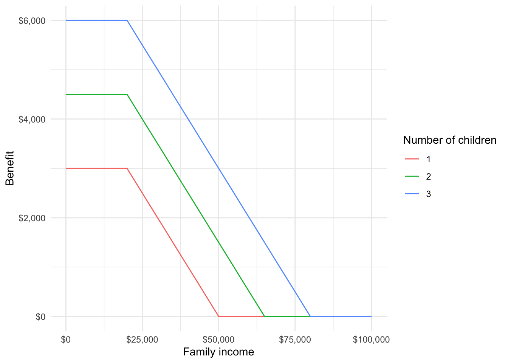
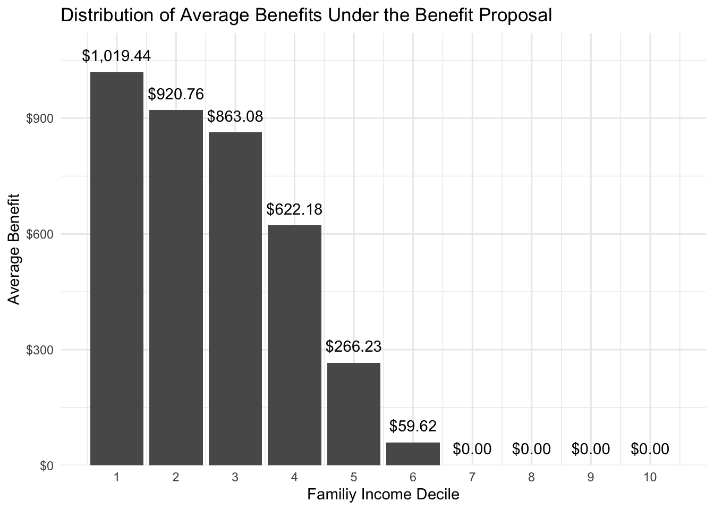

#' Calculate the benefit from the new tax credit
#'
#' @param num_children A numeric for the number of children
#' @param family_income A numeric for family income
#'
#' @return Numeric benefit in dollars
#'
new_tax_credit <- function(num_children, family_income) {
modified_income <- pmax(family_income - 20000, 0)
benefit <- dplyr::case_when(
num_children >= 3 ~ pmax(0, 6000 - 0.1 * modified_income),
num_children == 2 ~ pmax(0, 4500 - 0.1 * modified_income),
num_children == 1 ~ pmax(0, 3000 - 0.1 * modified_income),
TRUE ~ 0
)
return(benefit)
}10 Microsimulation
Abstract
This sections covers microsimulation, which is an important technique for policy evaluation.
10.1 Motivation
It is often important to ask “what would be the policy impact of…” on a population or subpopulation.
One common approach is to look at representative units. For example, we could construct one observation that is representative (e.g. median family structure, median income, etc.) and pass its values into a calculator. Then, we could extrapolate this experience to other observations.
Another common approach is to look at aggregated data. For example, we could look at county-level insurance coverage in Medicaid expansion and non-expansion states and then extrapolate to other health care expansions.
Orcutt (1957) suggested a radically different approach. Instead of using a representative unit or aggregated data to project outcomes, model outcomes for individual units and aggregate the results. Potential units-of-analysis include people, households, and firms. Models include anything from simple accounting rules to complex behavioral and demographic models.
It took decades for this approach to see wide adoption because of data and computational limitations, but it is now commonplace in policy evaluation.
10.2 Calculators
We’ll first look at calculators, which are an important tool for representative unit methods and microsimulation.
- The Tax Policy Center’s Marriage Calculator can be used to calculate tax marriage penalties and benefits.
- PolicyEngine contains scores of calculators for taxes and benefits. For example, this calculator evaluates marginal tax rates in California accounting for taxes and benefits.
These two examples show the value of using calculators to explore potentially harmful marriage disincentives like marriage penalties, benefits cliffs, and extremely high marginal tax rates.
10.2.1 Example 1
Suppose we are interested in creating a new tax credit that is very simple. Its only parameters are number of children and total family income. It has the following characteristics:
- Ignore the first $20,000 of family income
- Create a maximum benefit of $3,000 for one child, $4,500 for two children, and $6,000 for three or more children
- Reduce the benefit by $0.10 for every dollar of income in excess of $20,000.
We first create an R function that implements this policy proposal.
We can apply the calculator to representative cases:
[1] 1600[1] 6000We can also apply the calculator to many potential values and generate benefit plots:
Code
expand_grid(
family_income = seq(0, 100000, 100),
num_children = 1:3
) |>
mutate(
benefit = map2_dbl(
.x = num_children,
.y = family_income,
.f = new_tax_credit
)
) |>
ggplot(aes(family_income, benefit, color = factor(num_children))) +
geom_line() +
scale_x_continuous(labels = scales::label_dollar()) +
scale_y_continuous(labels = scales::label_dollar()) +
labs(
x = "Family income",
y = "Benefit",
color = "Number of children"
)

10.3 Microsimulation
Microsimulation
Microsimulation is a tool for projection that starts with individual observations (i.e. people or households) and then aggregates those individuals.
Microsimulation requires many assumptions and significant investment, but is useful for a few reasons:
- It can be used to project heterogeneous outcomes and to look at the distribution of outcomes instead of just typical outcomes.
- It can be used to evaluate “what-if” situations by comparing baseline projections with counterfactual projections.
Microsimulation is widely used in government, not-for-profits, and academia:
- The Congressional Budget Office’s Long-Term (CBOLT) model is used for long-term fiscal forecasts.
- The CBO uses HISIM2 to forecast health insurance coverage and premiums for people under age 65.
- The Urban-Brookings Tax Policy Center evaluates most major tax proposals with its tax microsimulation model.
Microsimulation is also widely cited in popular publications around important debates:
- The Urban Institute’s HIPSM was cited in the majority opinion of the Supreme Court case King v. Burwell, which upheld the Patient Protection and Affordable Care Act.
- TPC’s tax model is regularly cited in the New York Times, Wall Street Journal, and Washington Post when TPC evaluates candidates’ tax plans.
Microsimulation models range from simple calculators applied to representative microdata to very complex dynamic models.
10.3.1 Basic Microsimulation
Accounting Rules
Accounting rules are the basic calculations associated with government law and programs like taxes, Social Security benefits, and Medicare.
Accounting rules are sometimes called arithmetic rules because they are typically limited to addition, subtraction, multiplication, division, and simple if-else logic.
Let’s start with a very simple algorithm for microsimulation modeling:
- Construct a sample that represents the population of interest.
- Apply accounting rules.
- Aggregate.
The simplest microsimulation models essentially apply tax models similar to TurboTax to a representative set of microdata.
We can summarize output from microsimulation models with summary statistics that demonstrate the distribution of outcomes. For example, it is common to look at deciles or key percentiles to understand the heterogeneity of changes.
We can construct a baseline simulation by applying current law for step 2. Next, we can construct an alternative or counterfactual simulation by changing step 2 to a proposed policy. Finally, we can difference current law and the counterfactual to estimate the impact of a policy.
10.3.2 Example 2
Let’s consider a simple example where we apply the benefit calculator from earlier to families from the 2022 Annual Social and Economic Supplement to the Current Population Survey.
To keep things simple, we only consider families related to the head of household (and ignore other families in the household). Furthermore, we will ignore observations weights.1
Code
# if file doesn't exist in data, then download
if (!file.exists(here("data", "cps_microsim.csv"))) {
cps_extract_request <- define_extract_cps(
description = "2018-2019 CPS Data",
samples = "cps2022_03s",
variables = c("YEAR", "NCHILD", "FTOTVAL")
)
submitted_extract <- submit_extract(cps_extract_request)
downloadable_extract <- wait_for_extract(submitted_extract)
data_files <- download_extract(
downloadable_extract,
download_dir = here("data")
)
cps_data <- read_ipums_micro(data_files)
cps_data |>
filter(PERNUM == 1) |>
mutate(
FTOTVAL = zap_labels(FTOTVAL),
NCHILD = zap_labels(NCHILD)
) |>
select(SERIAL, YEAR, ASECWT, NCHILD, FTOTVAL) |>
rename_with(tolower) |>
write_csv(here("data", "cps_microsim.csv"))
}Rows: 59148 Columns: 5
── Column specification ────────────────────────────────────────────────────────
Delimiter: ","
dbl (5): serial, year, asecwt, nchild, ftotval
ℹ Use `spec()` to retrieve the full column specification for this data.
ℹ Specify the column types or set `show_col_types = FALSE` to quiet this message.proposal1 <- asec |>
mutate(
benefit = map2_dbl(
.x = nchild,
.y = ftotval,
.f = new_tax_credit
)
)
arrange(proposal1, desc(benefit))# A tibble: 59,148 × 6
serial year asecwt nchild ftotval benefit
<dbl> <dbl> <dbl> <dbl> <dbl> <dbl>
1 118 2022 865. 4 1552 6000
2 159 2022 1098. 3 1 6000
3 405 2022 933. 3 16478 6000
4 1914 2022 614. 4 9300 6000
5 3269 2022 391. 3 5400 6000
6 4632 2022 2624. 3 0 6000
7 4692 2022 1746. 3 15500 6000
8 4812 2022 1468. 4 12000 6000
9 5494 2022 662. 3 18000 6000
10 5596 2022 1708. 3 10002 6000
# ℹ 59,138 more rows10.3.3 Distributional Analysis
Aggregate analysis and representative unit analysis often mask important heterogeneity. The first major advantage of microsimulation is the ability to apply distributional analysis.
Distributional Analysis
Distributional analysis is the calculation and interpretation of statistics outside of the mean, median, and total. The objective is to understand a range of outcomes instead of typical outcomes.
Here, we expand step 3 from the basic microsimulation algorithm to include a range of statistics. The most common statistics are percentiles or outcomes for ntiles.
10.3.4 Example 3
Consider the previous example. Let’s summarize the mean benefit by family income decile. We can use the ntile() function to construct ntiles(). We can use min() and max() in summarize() to define the bounds of the ntiles.
distributional_table <- proposal1 |>
mutate(ftotval_decile = ntile(ftotval, n = 10)) |>
group_by(ftotval_decile) |>
summarize(
min_income = min(ftotval),
max_income = max(ftotval),
mean_benefit = mean(benefit)
)
distributional_table# A tibble: 10 × 4
ftotval_decile min_income max_income mean_benefit
<int> <dbl> <dbl> <dbl>
1 1 -19935 14160 1019.
2 2 14160 25200 921.
3 3 25200 37432 863.
4 4 37433 50100 622.
5 5 50100 65122 266.
6 6 65124 84000 59.6
7 7 84000 108006 0
8 8 108010 143210 0
9 9 143221 205154 0
10 10 205163 2320191 0 Code
distributional_table |>
ggplot(aes(ftotval_decile, mean_benefit)) +
geom_col() +
geom_text(aes(label = scales::label_dollar()(mean_benefit)), vjust = -1) +
scale_x_continuous(breaks = 1:10) +
scale_y_continuous(
expand = expansion(mult = c(0, 0.1)),
labels = scales::label_dollar()
) +
labs(
title = "Distribution of Average Benefits Under the Benefit Proposal",
x = "Familiy Income Decile",
y = "Average Benefit"
)
10.3.5 Counterfactual Analysis
Counterfactual
A counterfactual is a situation that would be true under different circumstances.
The second major advantage of microsimulation is the ability to implement counterfactuals and evaluate “what-if” situations. Consider a few examples:
- What could happen to the distribution of post-tax income if the top marginal tax rate is increased by 5 percentage points?
- What could happen to median Social Security benefits in 2030 if the retirement age is increased by 2 months every year beginning in 2024?
- What could happen to total student loan balances if federal student loan interest accumulation is paused for 6 more months.
We update our microsimulation algorithm to include counterfactual analysis.
- Construct a sample that represents the population of interest.
- Apply accounting rules that reflect current circumstances. This is the baseline microsimulation.
- Apply accounting rules that reflect counterfactual circumstances. This is the counterfactual microsimulation.
- Aggregate results with a focus on the difference between the baseline microsimulation and the counterfactual simulation.
10.3.6 Example 4
Let’s pretend the new_tax_credit() is current law. It is our baseline. Suppose a legislator proposes reforms to the law. This is our counterfactual. Here are the proposed changes:
- Eliminate benefits for families with zero income to promote work.
- Eliminate the $20,000 income exclusion to reduce benefits for higher earners.
#' Calculate the benefit from the new tax credit
#'
#' @param num_children A numeric for the number of children
#' @param family_income A numeric for family income
#'
#' @return Numeric benefit in dollars
newer_tax_credit <- function(num_children, family_income) {
dplyr::case_when(
family_income == 0 ~ 0,
num_children >= 3 ~ pmax(0, 6000 - 0.1 * family_income),
num_children == 2 ~ pmax(0, 4500 - 0.1 * family_income),
num_children == 1 ~ pmax(0, 3000 - 0.1 * family_income),
TRUE ~ 0
)
}proposal2 <- asec |>
mutate(
benefit_baseline = map2_dbl(
.x = nchild,
.y = ftotval,
.f = new_tax_credit
),
benefit_counteractual = map2_dbl(
.x = nchild,
.y = ftotval,
.f = newer_tax_credit
)
)
proposal2 |>
mutate(benefit_change = benefit_counteractual - benefit_baseline) |>
mutate(ftotval_decile = ntile(ftotval, n = 10)) |>
group_by(ftotval_decile) |>
summarize(
min_income = min(ftotval),
max_income = max(ftotval),
mean_benefit = mean(benefit_change)
)# A tibble: 10 × 4
ftotval_decile min_income max_income mean_benefit
<int> <dbl> <dbl> <dbl>
1 1 -19935 14160 -374.
2 2 14160 25200 -436.
3 3 25200 37432 -557.
4 4 37433 50100 -467.
5 5 50100 65122 -242.
6 6 65124 84000 -59.6
7 7 84000 108006 0
8 8 108010 143210 0
9 9 143221 205154 0
10 10 205163 2320191 0 10.3.7 Extrapolation
Extrapolation
Extrapolation is the extension of microsimulation models to unobserved time periods. Most often, microsimulation models are extrapolated into the future.
Most microsimulation models incorporate time. For example, many models look at a few or many years. We now add a new step 2 to the microsimulation algorithm, where we we can project demographic and economic outcomes into the future or past before applying accounting rules and aggregating the results.
- Construct a sample that represents the population of interest.
- Extrapolate the population of interest over multiple time periods.
- Apply accounting rules.
- Aggregate.
Some microsimulation models treat time as continuous. More often, microsimulation treats time as discrete. For example, models represent time every month or every year.
Extrapolation adds uncertainty and assumptions to microsimulation. It is important to be clear about what microsimulation is and isn’t.
Projection
A projection explores what could happen under a given set of assumptions. It is always correct under the assumptions.
Forecast
A forecast attempts to predict the most-likely future.
Most microsimulation models are projections, not forecasts.
10.3.8 Transitions
Static Microsimulation
Static microsimulation models do not subject units to individual transitions between time periods \(t - 1\) and \(t\) or to behavioral responses.
Static models typically only deal with one time period or they deal with multiple time periods but reweight the data to match expected totals and characteristics over time. Basically, individual decisions affect the distribution of outcomes but have little impact on overall outcomes.
Dynamic Microsimulation
Dynamic microsimulation models subject individual units to transitions between time periods \(t - 1\) and \(t\). This is sometimes referred to as “aging” the population. Dynamic microsimulation models sometimes subject individual units to behavioral responses.
Transitions from period \(t - 1\) to period \(t\) are key to dynamic microsimulation. Transitions can be deterministic or stochastic. An example of a deterministic transition is an individual always joining Medicare at age 65. An example of a stochastic transition is an unmarried individual marrying at age 30 with probability \(p_1\) and remaining unmarried with probability \(p_2\). Stochastic transitions are connected to the idea of Monte Carlo simulation.
Transition models are fundamental to stochastic transitions. Transition models include transition probability models (categorical variables) and processes based on probability distributions (continuous variables).
Here are are few examples of transitions that could be modeled:
- If an individual will acquire more education.
- If an individual will work.
- If an individual will marry, divorce, or widow.
- If an individual will have children.
- If an individual will retire.
- If an individual will die.
Transition models are often taken from existing literature or estimated on panel data. The data used to estimate these models must have at least two time periods.
It is common to extrapolate backwards, which is also known as backcasting, to evaluate microsimulation models against history. Backcasting can add important longitudinal information to records like detailed earnings histories for calculating Social Security benefits. Backcasting also offers opportunities to benchmark model projections against observed history.
10.3.9 Example 5
Let’s extrapolate our 2022 CPS data to 2023 and 2024 using transition models for number of children and family total income.
The transition model for number of children is very simple. 15% of families lose a child, 80% of families observe no change, and 5% of families gain one child.
#' Extrapolate the number of children
#'
#' @param num_children A numeric for the number of children in time t
#'
#' @return A numeric for the number in time t + 1
#'
children_hazard <- function(num_children) {
change <- sample(x = c(-1, 0, 1), size = 1, prob = c(0.15, 0.8, 0.05))
pmax(num_children + change, 0)
}The transition model for family income is very simple. The proportion change is drawn from a normal distribution with \(\mu = 0.02\) and \(\sigma = 0.03\).
For simplicity, we combine both transition models into one function.
Finally, we extrapolate.
The benefit and income amounts in new_tax_credit() are not indexed for inflation. Let’s see how benefits change over time with the extrapolated data.
asec_extrapolated |>
mutate(
benefit = map2_dbl(
.x = nchild,
.y = ftotval,
.f = new_tax_credit
)
) |>
group_by(year) |>
summarize(
mean_ftotval = mean(ftotval),
total_nchild = sum(nchild),
mean_benefit = mean(benefit)
)# A tibble: 3 × 4
year mean_ftotval total_nchild mean_benefit
<dbl> <dbl> <dbl> <dbl>
1 2022 97768. 46296 375.
2 2023 99705. 45615 379.
3 2024 101700. 44848 379.Even though incomes grew and the number of children declined, it turns out that enough families went from zero children to one child under the transition probability model for children that average benefits remained about the same.
10.3.10 Beyond Accounting Rules
Behavioral Responses
A behavioral response is an assumed reaction to changing circumstances in a microsimulation model.
For example, increasing Social Security benefits may crowd out retirement savings (Chetty et al. 2014). In other words, the existence of Social Security may induce a person to save less for retirement.
Until now, we’ve only considered accounting rules within each time period. Accounting rules are appealing because they don’t require major assumptions, but they are typically insufficient. It is often necessary to consider how units will respond to a changing environment.
Behavioral responses are often elasticities estimated with econometric analysis. Behavioral responses are also a huge source of assumptions and uncertainty for microsimulation.
Consider a microsimulation model that models retirement savings. When modeling a proposal to expand Social Security benefits, an analyst may use parameters estimated in (Chetty et al. 2014) to model reductions in savings in accounts like 401(k) accounts. These are behavioral responses. These estimates are uncertain, so the analyst could add sensitivity analysis to model low, medium, and high rates of crowding out.
10.4 Building a Representative Population
Building a starting sample and constructing data for estimating transition models is difficult. We briefly outline a few techniques of interest.
10.4.1 Synthetic Starting Data
We’ve adopted a cross-sectional starting population. Some microsimulation models adopt a synthetic2 approach where every observation is simulated from birth.
10.4.2 Data Linkage and Imputation
Many microsimulation models need more variables than are included in any one source of information. For example, retirement models often need demographic information, longitudinal earnings information, and tax information. Many microsimulation models rely on data linkage and data imputation techniques to augment their starting data.
Data Linkage
Data linkage is the process of using distance-based rules or probabilistic models to connect an observation in one source of data to an observation in another source of data.
Data imputation
Data imputation is the process of using models to predict values where data is unobserved. The data could be missing because of nonresponse or because the information was not gathered in the data collection process.
10.4.3 Validation
Validation
Validation is the process of reviewing results to determine their validity. Techniques include comparing statistics, visual comparisons, and statistical comparisons like the Kolmogorov-Smirnov test for the equivalence of two distributions.
Visual and statistical validation are essential to evaluating the quality of a microsimulation model. If validation looks poor, then a modeler can redo other parts of the microsimulation workflow or they can reweight or align the data.
10.4.4 Reweighting
Reweighting
Reweighting is the process of adjusting observation weights in a data set so aggregate weighted statistics from the data set hit specified targets.
Suppose a well-regarded source of information says mean income is $50,000 but a microsimulation model estimates mean income of $45,000. We can use reweighting to plausibly adjust the weights in the microsimulation model so mean income is $50,000.
Techniques include post-stratification and calibration. Kolenikov (2016) offers a good introduction.
10.4.5 Alignment
Alignment
Alignment is the process of adjusting model coefficients or predicted values so aggregated outputs align with specified aggregate targets. These targets are aggregate outcomes like total income or state-level tax revenue.
Suppose a well-regarded source of information says mean income is $50,000 but a microsimulation model estimates mean income of $45,000. We can adjust the intercept in linear regression models or adjust predicted values so mean income is $50,000. Li and O’Donoghue (2014) offers a good introduction.
10.5 Assumptions
Microsimulation is only as useful as its assumptions. We will review a few key assumptions present in many microsimulation models.
10.5.1 Open vs. Closed
Closed Model
A closed microsimulation model models the life cycle of all units in the model. For example, two existing units marry.
Open Model
An open microsimulation model allows for the on-demand generation of new, but mature, units in the model.
10.5.2 Independence
Another important assumption deals with the relationship between units in the model. Should observations be treated as wholly independent or do they interact? For example, if someone takes a job is it more difficult for another individual to take the job?
Interactions can be explicit or implicit.
Explicit Interaction
Explicit interaction allows the actions of one unit to affect other units during extrapolation or behavioral models.
For example, models of marriage markets may account for changing economic circumstances among potential matches.
Implicit Interaction
Implicit interaction allows the actions of one unit to affect other units in post-processing.
For example, reweighting and alignment techniques allow outcomes for one unit to affect other units through intercepts in models and new weights.
10.5.3 Markov Assumption
Markov Assumption
The Markov assumptions states that the only factors affecting a transition from period \(t - 1\) to period \(t\) are observable in \(t - 1\).
The Markov assumption only considers memory or history to the extent that it is observable in period \(t - 1\). For example, \(t - 2\) may affect educational attainment or college savings in \(t - 1\), which can affect the transition from \(t - 1\) to \(t\), but \(t - 2\) will never be explicitly included.
10.6 Uncertainty
Aletoric Uncertainty
Aleatoric uncertainty is uncertainty due to probabilistic randomness.
Epistemic Uncertainty
Epistemic uncertainty is uncertainty due to lack of knowledge of the underlying system.
The microsimulation field has a poor track record of quantifying uncertainty. Most estimates do not contain standard errors or even crude distributions of outcomes.
Microsimulation models have many sources of uncertainty. The starting data and data used for model estimation are often samples with sampling error. Transition models fail to capture all sources of variation. The models often intentionally include Monte Carlo error.
McClelland, Khitatrakun, and Lu (2020) explored adding confidence intervals to microsimulation models using normal approximations and bootstrapping methods3. They find that normal approximations work well in most cases unless policy changes affect a small number of returns.
Across microsimulations for five policy approaches, they estimate modest confidence intervals. This makes sense. First, microsimulation aggregates many units that have their own sources of uncertainty. This is different than earlier examples of Monte Carlo simulation that focused on one observation at a time. Aggregation reduces variance.4
Second, the authors only consider uncertainty because of sampling variation. This fails to capture aleatoric uncertainty from statistical matching, imputation, and projection. Furthermore, these methods fail to capture epistemic uncertainty. The confidence intervals, in other words, assume the model is correct.
Given these shortcomings, it is important to be clear about assumptions, transparent about implementations, and humble about conclusions. All useful models are wrong. The hope is to be as little wrong as possible.
10.7 Microsimulation Model Examples
First, let’s outline a few characteristics of microsimulation models.
Compiled Programming Languages
Compiled programming languages have an explicit compiling step where code is converted to assembly language and ultimately binary code.
C++, Fortran, and Java are examples of compiled programming languages.
Scripting Programming Languages
Scripting programming languages, also known as interpreted programming languages, do not have a compiling step.
R, Python, and Julia are examples of scripting programming languages.
Aruoba and Fernndez-Villaverde (2018) benchmark several programming languages on the same computing task. Lower-level, compiled programming languages dominate higher-level, scripting programming languages like R and Python. Julia is the lone bright spot that blends usability and performance.
Many microsimulation models are written in lower-level, compiled programming languages. Fortran may seem old, but there is a reason it has stuck around for microsimulation.
General Microsimulation Models
General microsimulation models contain a wide range of behaviors and population segments.
Specialized Microsimulation Models
Specialized microsimulation models focus on a limit set of behaviors or population segments. ~ Stats Canada
10.7.1 Simulating the 2020 Census
- Name: Simulating the 2020 Census
- Authors: Diana Elliott, Steven Martin, Jessica Shakesprere, Jessica Kelly
- General or specific: Specific
- Language: Python
- Purpose: The authors simulate various Decennial Census response factors and evaluate the distribution of responses to the Decennial Census.
10.7.2 TPC Microsimulation in the Cloud
- Name: TPC Microsimulation in the Cloud
- Authors: The TPC microsimulation team, Jessica Kelly, Kyle Ueyama, Alyssa Harris
- General or specific: Specific
- Language: Fortran
- Purpose: The authors take TPC’s tax microsimulation model and move it to the cloud. This allows TPC to reverse the typical microsimulation process. Instead of describing policies and observing the outcomes, they can describe desirable outcomes and then use grid search to back out policies that achieve those outcomes.
10.7.3 Modeling Income in the Near Term (MINT)5
- Name: Modeling Income in the Near Term (MINT)
- Authors: Karen E. Smith and many other people
- General or specific: General
- Language: SAS6
- Purpose: The Social Security Administration uses MINT to evaluate the distributional impact of various Social Security policy proposals.
Most data for microsimulation models are collected through complex surveys. Accordingly, most microsimulation models need to account for weights to calculate estimates that represent the entire population of interest.↩︎
Synthetic will carry many meanings this semester.↩︎
Their implementation of bootstrapping is clever and uses replicate weights to simplify computation and manage memory.↩︎
The standard error of the mean reduces at a rate of \(\sqrt{n}\) as the sample size increases.↩︎
MINT comically models income and many other variables for at least 75 years into the future.↩︎
The Dynamic Simulation of Income Model (DYNASIM) is a related to MINT and is written in Fortran.↩︎